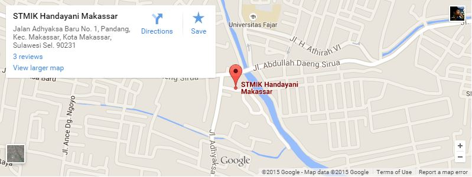

Sekolah Tinggi Manajemen Informatika dan Komputer (STMIK) Handayani adalah Lembaga Pendidikan Tinggi yang mengelola program studi berbasis IT (Information Teknology) di Kopertis Wil. IX yang didirikan sejak tahun 1996 oleh Bapak ALIFUDDIN dibawah naungan Yayasan Pendidikan Handayani. Yayasan Pendidikan Handayani telah mendapat pengesahan dari Kementerian Hukum dan HAM Republik Indonesia sesuai SK No. AHU-1129.AH.01.04 Tahun 2011.
STMIK Handayani didirikan dengan Surat Keputusan Menteri Pendidikan Nasional Republik Indonesia Nomor 37/D/O/1996 tanggal 21 Juni 1996 yang hingga saat ini membina 6 (enam) program studi, masing-masing Magister Komputer (S2), Teknik Informatika (S1), Teknik Komputer/Sistem Komputer (S1), Sistem Informasi (SI), dan Manajemen Informatika (D3). Kemudian pada tahun 2000 dibuka program studi Komputerisasi Akuntansi (D3), berdasarkan keputusan Dirjen Pendidikan Tinggi Kemendiknas RI Nomor 360/DIKTI/Kep/2000 tanggal 4 Oktober 2000. Pada Tahun 2013 STMIK Handayani mendapat kepercayaan dari DIKTI untuk membuka program studi Pascasarjana Magister Sistem Komputer, ini merupakan satu prestasi yang membanggakan karena merupakan program studi Magister Komputer satu-satunya yang berada di kawasan Indonesia Timur.
STMIK Handayani didirikan dengan Surat Keputusan Menteri Pendidikan Nasional Republik Indonesia Nomor 37/D/O/1996 tanggal 21 Juni 1996 yang hingga saat ini membina 6 (enam) program studi, masing-masing Magister Komputer (S2), Teknik Informatika (S1), Teknik Komputer/Sistem Komputer (S1), Sistem Informasi (SI), dan Manajemen Informatika (D3). Kemudian pada tahun 2000 dibuka program studi Komputerisasi Akuntansi (D3), berdasarkan keputusan Dirjen Pendidikan Tinggi Kemendiknas RI Nomor 360/DIKTI/Kep/2000 tanggal 4 Oktober 2000. Pada Tahun 2013 STMIK Handayani mendapat kepercayaan dari DIKTI untuk membuka program studi Pascasarjana Magister Sistem Komputer, ini merupakan satu prestasi yang membanggakan karena merupakan program studi Magister Komputer satu-satunya yang berada di kawasan Indonesia Timur.
Dengan demikian sampai saat ini STMIK-Handayani telah membina 6 (enam) program studi, yakni :
| No. | Program Studi | Jenjang | Status |
|---|---|---|---|
| 1 | Magister Sistem Komputer | Strata – 2 | Terakreditasi C |
| 2 | Sistem Komputer | Strata – 1 | Terakreditasi C |
| 3 | Teknik Informatika | Strata – 1 | Terakreditasi C |
| 4 | Sistem Informasi | Strata – 1 | Terakreditasi C |
| 5 | Manajemen Informatika | Diploma – 3 | Terakreditasi C |
| 6 | Komputerisasi Akuntansi | Diploma – 3 | Terakreditasi B |
Lokasi kampus:
PERINGATAN Hari Pendidikan Nasional (Hardiknas) menjadi ...
Setelah dinobatkan sebagai Mahasiswa Berprestasi Utama UI ...
MAKASSAR, TRIBUN-TIMUR.COM -Sivitas akademika Politeknik ...
Malang, 30 Juni 2015 – Setelah melalui tes psikologi, ...
Pemilihan Mahasiswa Berprestasi (Mawapres) yang berlangsung sejak ...